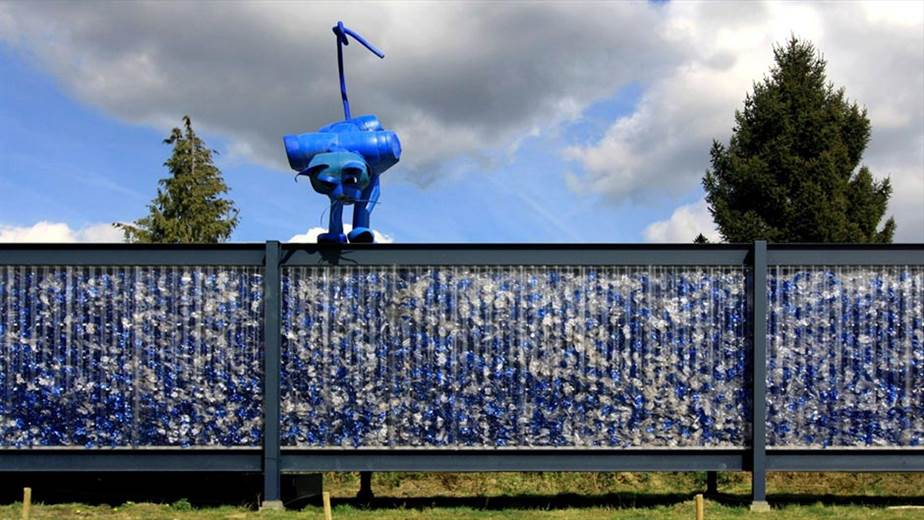
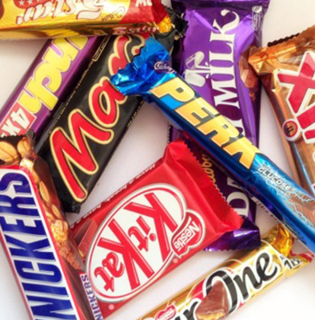
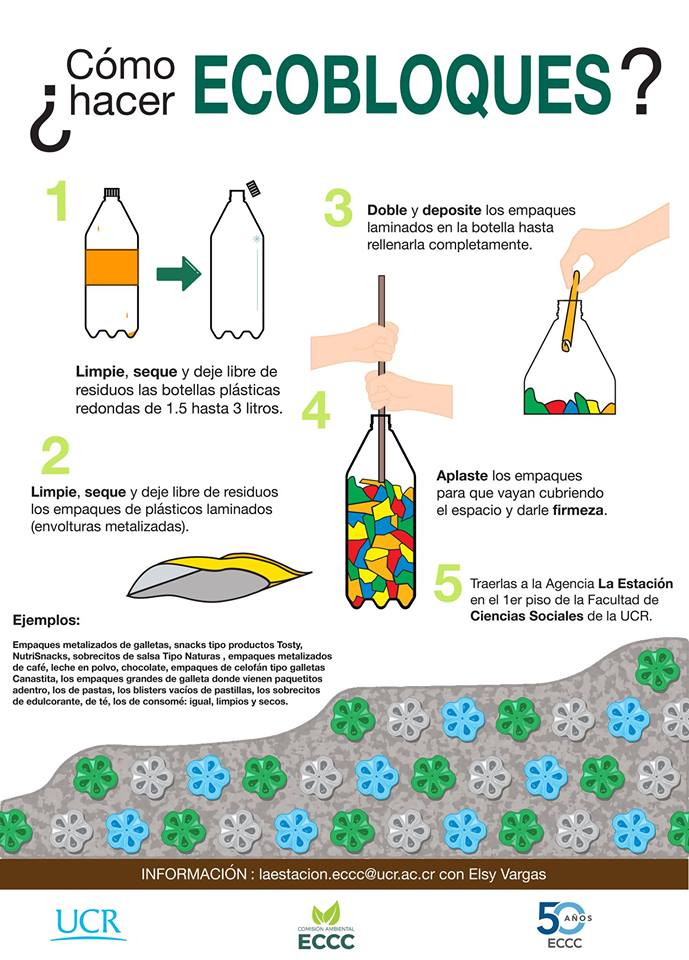
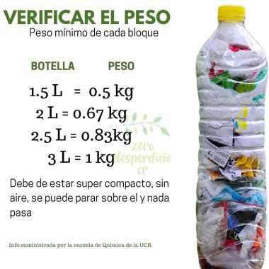

Antedecedentes.
El aumento en la oferta de energía de fuentes renovables y la deuda ecológica que desde el 2011 ha ido en disminución, son indicadores del camino en pro del ambiente que han decidido tomar los costarricenses. Sin embargo, hay acciones que podrían mejorar la situación actual en este ámbito. Según la UCR, en el país se consumen anualmente 1,7 millones de botellas plásticas al día, es decir, 622 millones anualmente; de esta cantidad, menos del 2% se recicla.


Conciencia.
La conciencia ambiental en la sociedad va creciendo poco a poco y en parte se traduce en la implementación de proyectos e iniciativas en pro del ambiente. Las eco-botellas(también conocidas como ecobloques o ecoladrillos) son una de ellas, porque para crearlas se combinan dos tipos de desechos que se producen en el hogar: los empaques plásticos y las botellas PET (polyethylene terephthalate).
¿Qué son los Eco-Bloques?
Son botellas de plástico de 1.5 litros o 2.5 litros, idealmente, que contienen todo tipo de residuos que no son reciclables o recibidos por centros de acopio.

EcoBloques tambien conocidos como EcoLadrillos
Un paso más para alcanzar la sostenibilidad
Click para activar sonido
¿Qué es?
Un ecobloque consiste en una botella plástica con residuos depositados dentro de una manera tan compacta que se vuelve lo suficientemente resistente como para ser utilizados para diferentes ideas.
¿Qué tiene?
Envoltorios plásticos laminados (envolturas metalizadas) como envoltorios de galletas y otros snacks por ejemplo:
Elaboración
Hacer un ecobloque consta de sólo 5 pasos. ¡Y nos permite aportar nuestro granito de arena para conservar nuestro medio ambiente reutilizando desechos!
Verificación
¿Lo estoy haciendo bien?
A continuación te contamos cómo verificar si tu ecobloque ha sido elaborado correctamente
Semana Ambiental UCR: Sea parte de la iniciativa de los eco-bloques
En Costa Rica se desechan 550 toneladas diarias de plástico de las cuales se reutiliza el 9% solamente. Sin embargo, además del reciclaje, es posible darles un segundo uso a las botellas con esta iniciativa
La Universidad de Costa Rica (UCR) hace el llamado a la población en esta Semana del Ambiente para que participen en la iniciativa de los eco-bloques, botellas de plástico rellenas de material no reciclable y utilizadas para distintas construcciones de muebles modulares o hasta infraestructura.
En Costa Rica se consumen 666 millones de botellas plásticas al año, una cifra preocupante y un futuro poco prometedor ya que la falta de compromiso ciudadano y de políticas de consumo aumentan el número de botellas de plástico usadas y mal desechadas, según la institución.
En este momento, se recicla menos del 2% del plástico, y este se queda en los depósitos, rellenos, ríos y playas del país.
Una familia costarricense de cuatro o cinco personas utiliza en promedio 3.500 envases en el lapso de un año. Una botella plástica dura aproximadamente 1.000 años en degradarse, eso quiere decir que aún convivimos con los primeros plásticos que fueron producidos.
En Costa Rica se desechan 550 toneladas diarias de plástico de las cuales se reutiliza el 9 % solamente, según datos de la UCR.
Sin embargo, además del reciclaje, es posible darles un segundo uso con esta iniciativa.
¿Qué se necesita?
1. Botellas de plástico limpias, secas, con tapa y de 1.5 litros hasta 3 litros.
2. Rellenar la botella con residuos no reciclables como celofán, bolsas para leche en polvo, bolsas para café, empaques para galletas y empaques para bocadillos diversos, los cuales se cortan en trozos del tamaño aproximado de una moneda de ₡500.
3. Una herramienta para compactar los materiales dentro de la botella para que quede totalmente sin aire.
Cuando se evita la descomposición de una tonelada de botellas de polietileno no se emiten 155 kg CO2 equivalente a la atmósfera, y si se suma el material de empaque plástico del relleno, se evita diez veces más la emisión de gases de efecto invernadero.
Según el centro educativo, los seres humanos producimos en el mundo casi 20.000 botellas plásticas por segundo y esa cifra aumentará 20 % para el año 2021.
La UCR estuvo recolectando estas botellas hace un tiempo, sin embargo, debido a la gran participación ya no hay sitio donde almacenarlas, por lo que invitan a la población a hacer sus propias construcciones.
¡Súmese a la iniciativa de Eco-bloques! Conozca aquí los centros de acopio
Se construyen y recolectan para proyectos de construcción
Redacción- La iniciativa, eco-bloques, ya ha tomado a todo el mundo y Costa Rica no es la excepción. Si usted quiere sumarse y ser parte de esta idea en pro del medio ambiente, preste atención a la siguiente información en la que le contamos cómo formar parte de este proyecto y dónde acudir para hacer entrega de sus eco-bloques.
¿Qué son los Eco-bloques?
Son botellas de plástico de 1.5 litros o 2.5 litros, idealmente, que contienen todo tipo de residuos que no son reciclables o recibidos por centros de acopio.
Todo lo que sea plástico: paquetes de galletas, confites, la envoltura de rasuradoras, los tubos de las pastas de dientes, sin la cabeza, los mangos de los cepillos de dientes, sin las cerdas, los paquetes en los que se envuelven los medicamentos, entre otros.
Los residuos que se coloquen dentro de la botellas deben estar totalmente limpios, un aspecto muy importante a la hora de elaborarlos.
La organización ambiental “Enviajarme” de la provincia de Heredia, cuenta con dos centros de acopio, uno en San José de la Montaña y otro en Mercedes Norte.
En el caso de este centro, la idea de adquirir los eco-bloques es para la utilización de estos en la construcción. Dentro de su organización, cuenta con un profesional en arquitectura.
“La idea a nivel nacional es recibir eco-bloques de todas las comunidades para realizar diferentes proyectos como la restauración de espacios que puede estar abandonados”, señaló Mari González, líder ambiental de Enviajarme.
La Universidad de Costa Rica (UCR) también se sumó a esta gran iniciativa; sin embargo, el departamento de prensa de este centro de educación superior informó a este medio que pese a que la Escuela de Química estuvo trabajando y recibiendo los eco-bloques, ya no están en la capacidad de procesar más.
“Ahora solo se piden si hay un proyecto específico en el que se pueden usar”, indicó prensa UCR a AM Prensa.com.
En caso de que la institución requiera adquirirlos, estará informando a la población, por el momento, la UCR invita a la población a crearlos desde sus hogares.
Hagamos ecobloques y ayudemos al ambiente
Para crearlos se combinan dos tipos de desechos que se producen en el hogar: los empaques plásticos y las botellas de politereftalato de etileno
El aumento en la oferta de energía de fuentes renovables y la deuda ecológica que desde el 2011 ha ido en disminución, son indicadores del camino en pro del ambiente que han decidido tomar los costarricenses.
Sin embargo, hay acciones que podrían mejorar la situación actual en este ámbito. De acuerdo con la Universidad de Costa Rica (UCR), en el país se consumen anualmente 1,7 millones de botellas plásticas al día, es decir, 622 millones anualmente; de esta cantidad, menos del 2% se recicla.
El informe del Estado del Ambiente 2017, indica que en el pasado los costarricenses producían muy pocos residuos y los que existían, se enterraban en los patios o se reutilizaban. Ahora, según Agustín Gómez, del Observatorio del Desarrollo de la UCR, se usan y se botan sin control.
“Se debe acompañar el rechazo del plástico de un solo uso con propuestas para brindarle al ciudadano facilidades que modifiquen o generen el patrón de consumo responsable. Es necesario incomodarnos como ciudadanos y volver a patrones más sostenibles”, indicó Gómez.
Ecobloques
Esos patrones sostenibles han vuelto poco a poco, así como ha crecido la conciencia ambiental en la sociedad, que en parte se traduce en la implementación de proyectos e iniciativas en pro del ambiente.
Las eco-botellas (también conocidas como ecobloques o ecoladrillos) son una de ellas, porque para crearlas se combinan dos tipos de desechos que se producen en el hogar: los empaques plásticos y las botellas de politereftalato de etileno conocidos por sus siglas en inglés PET (polyethylene terephthalate).
Consisten en rellenar una botella de plástico vacía con desechos que no se pueden reciclar de otra manera, por ejemplo, bolsas de nylon, celofanes o empaques plásticos metalizados como los de galletas.
Como parte de la iniciativa se han planteado muchas formas de utilizarlas, entre ellos destacan la función de aislante térmico dentro de estructuras de madera y en otros países se han utilizado para construir edificaciones. Esta última opción sería posible si se colocan los ecobloques en una malla de alambre y luego se pegan con arena y cemento, aunque Antonio Calvo, de Coalición Ambiental, aclara que en Costa Rica de momento no se pueden utilizar para construcciones habitables.
Para hacerlo
Construir una unidad de estas no consume mucho tiempo y es fácil de hacer:
1. Conseguir una botella de plástico vacía de 1 litro e incluso de 3 litros.
2. Lavar y secar cuidadosamente el envase antes de comenzar a rellenarlo.
3. Limpiar y si es necesario, secar los empaques que se depositarán dentro de la botella.
4. Introducir los empaques en el envase.
5. Comprimir fuertemente los empaques que están dentro para que se logre obtener peso.
6. Cuando ya no entre ningún envoltorio más y se haya compactado bien, se debe volver a tapar la botella.
7. Guardarla y llevarla a uno de los centros donde las reciben.
Existen 15 puntos de recolección en todo el país, entre ellos: la Biblioteca Pública de Heredia, la Municipalidad de Parrita en Puntarenas, la Universidad de Costa Rica en su sede Rodrigo Facio y la Biblioteca Pública de Cartago.
Para conocer cuáles son todos estos centros y con quién debe contactarse para hacer la entrega, puede hacer clic en la fotografía del mapa para verla en tamaño completo.
Sin perder conciencia
El miembro fundador de Coalición Ambiental Voluntariado, Juan Carlos Núñez, comenzó en el 2018 con esta comunidad que pretende despertar conciencia ambiental a partir de la educación, las acciones y compartir puntos de vista e iniciativas.
Según el fundador de la comunidad, el problema con los ecobloques recae en que muchas personas no se informan adecuadamente y depositan cualquier tipo de basura en las botellas e incluso pierden el sentido de concientizar sobre el uso en exceso de estos envases o envolturas.
Para formar parte de Coalición Ambiental Voluntariado puede comunicarse con ellos por medio de Facebook y participar de las campañas pro ambiente.
Biblioteca Pública de Ciudad Quesada recibe “eco-bloques”
Más allá de promover la lectura, las bibliotecas se han convertido en espacios integrales donde se llevan a cabo actividades culturales y esfuerzos en pro del medio ambiente.
Dentro de este contexto, el Sistema Nacional de Bibliotecas de Costa Rica, SINABI, actualmente promueve la elaboración y utilización de “eco-bloques”, es decir, botellas de plástico que se rellenan con empaques no reciclables, para buscar la reutilización de estos materiales y disminuir la contaminación ambiental. Este proyecto nace en la Comisión Interinstitucional Carbono Neutro de la Universidad de Costa Rica y, a partir de su elaboración, otras instituciones, como las bibliotecas del SINABI, se han unido.
En San Carlos, los “eco-bloques” son recibidos en la Biblioteca Pública de Ciudad Quesada. Tatiana Garita, directora de esta entidad, explicó que en la UCR, “lo que están creando es una especie de muro de contención”. Garita agregó que ya han motivado a los grupos que participan en sus actividades permanentes para que, entre todos, llenen una botella y aseguró “nosotros ya tenemos como unas 6 botellas llenas y hay papás que están llenando botellas por su cuenta.”
¿Cómo hacer un eco-bloque?
El primer paso es conseguir una botella de plástico vacía que tenga las iniciales “PETE”; estas botellas suelen utilizarse para envasar refrescos gaseosos o agua. Para armar un “eco-bloque” se puede usar una botella de 1 litro o hasta de 3 litros. El envase debe lavarse y secarse bien antes de empezar a rellenarlo. Como segundo paso, la botella se debe rellenar con empaques plásticos metalizados como los de leche en polvo, café, galletas y confites, entre otros. Todos estos empaques deben estar limpios y secos, antes de ingresarlos en la botella.
Los empaques deben comprimirse fuertemente dentro del envase para lograr el peso requerido. Garita explica que “cada botella tiene que tener un peso mínimo. Por ejemplo, las de 2 litros deben de pesar alrededor de 600 gramos.”.
Cuando la botella se encuentra totalmente llena y alcanza el peso ideal, se le puede poner la tapa para entregarla en la biblioteca. Sin embargo, los “eco-bloques” también se pueden aprovechar en hogares o comunidades para desarrollar proyectos como la fabricación de muebles, paredes, muros, caminos y escaleras. Solo deben unirse con cuerdas de nylon, alambre, pegamento acrílico o silicón.
Si quiere formar parte de esta campaña en pro del medio ambiente, puede entregar sus “eco-bloques” en la Biblioteca Pública de Ciudad Quesada. El horario de atención es de lunes a viernes de 10:00 a.m. a 6:00 p.m. En la biblioteca también encontrará apoyo si tiene dudas sobre cómo rellenar los envases correctamente.